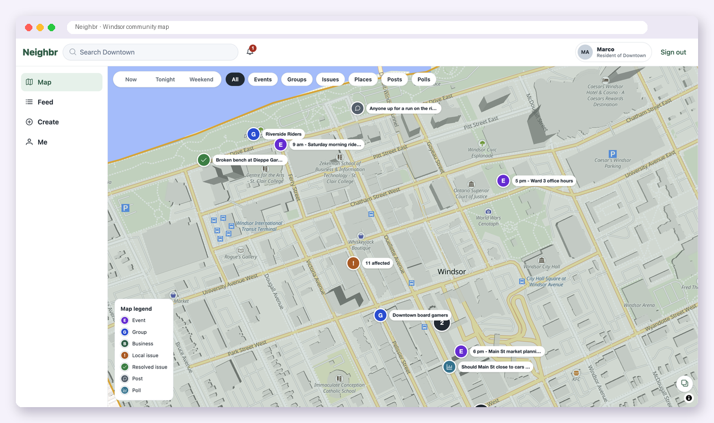
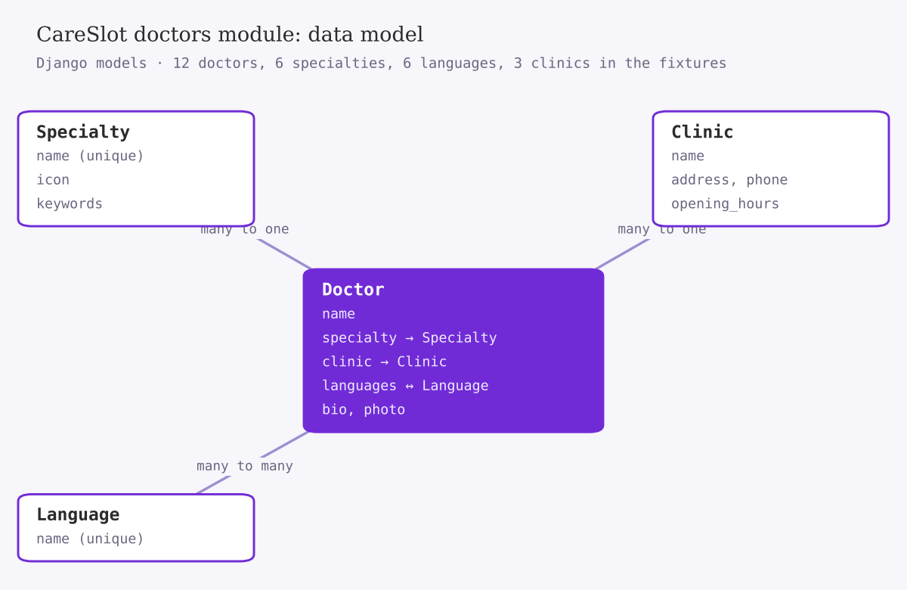

Projects

Why Do Patients Miss Clinic Appointments?
Interactive dashboard on 110,000 clinic appointments, built on a SQL Server database with a Python loader and T-SQL analysis.

Crime Data Warehouse
A data warehouse in Oracle combining crime records from two police systems, with a full ETL pipeline in PL/SQL and dashboards in Tableau and Oracle APEX.

Neighbr: A Community App for Windsor
A working prototype for a real client business, helping Windsor neighbourhoods report and follow local issues. Built with Angular.

CareSlot Clinic Booking
A Django website for booking clinic appointments. I designed the doctor data model and built the symptom-aware doctor search.

MySQL vs DuckDB Benchmark
When does a row-store stop being good enough for analytics? TPC-H at 6 to 60 million rows, up to 2,600x apart.